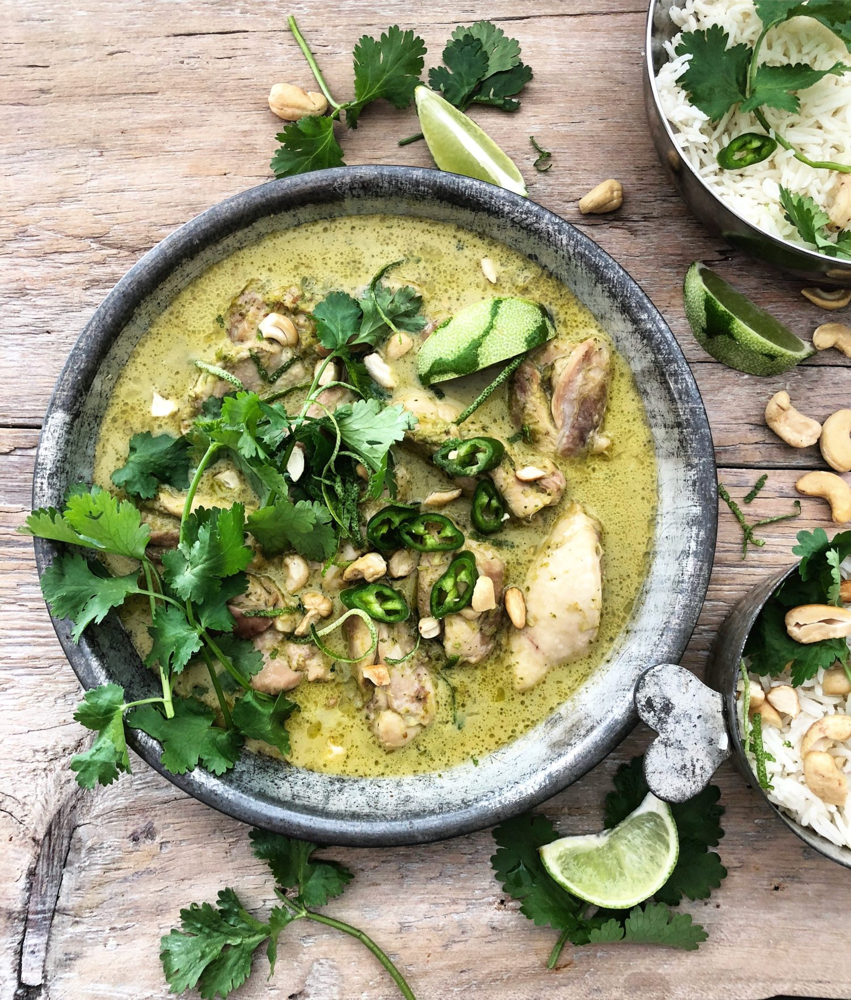

Thai Green Curry with Chicken

Description
This is the recipe that I make to bring together a large group of people. It;s citric, hearty, and warm. You can
substitute any protein for chicken; popular options
are porks, tofu, shrimp, and fish. It comes together in one pot and pairs really well with white rice.
Ingredients
- Mae Ploy Green Curry Paste
- Vegetable Oil
- Chicken Broth
- About 2 Pounds of Chicken Breast Strips
- Garlic
- Ginger
- Onion
- Lemongrass
- Fish Sauce
- Bamboo Shoots
- Canned Coconut Cream
- Red Bell Pepper
- Brocolli
- Carrots
- Vinegar
- Thai Red Chillies(optional)
Steps
- Warm the oil in a large pan.
- Saute the onions until they turn golden brown.
- Sear the chicken until browned.
- Add garlic and ginger, saute until aromatic. (optional add chilis as well).
- Add Carrots and Bell peppers, saute.
- Add the Green curry paste to the bottom of the pan, frying until it is aromatic.
- Pour half of your coconut cream into the pan along with all of the chicken broth and the drained bamboo shoots.
- Allow to simmer for a few hours letting the vegetables soften and chicken finish cooking, you may add
the brocolli towards the end of the cooking and cook to your desired liking.
- Add the remainder of the coconut cream, taste for salt and add fish sauce and vinegar as per your liking
- You may now enjoy with whatever side dishes you prefer such as noodles or rice